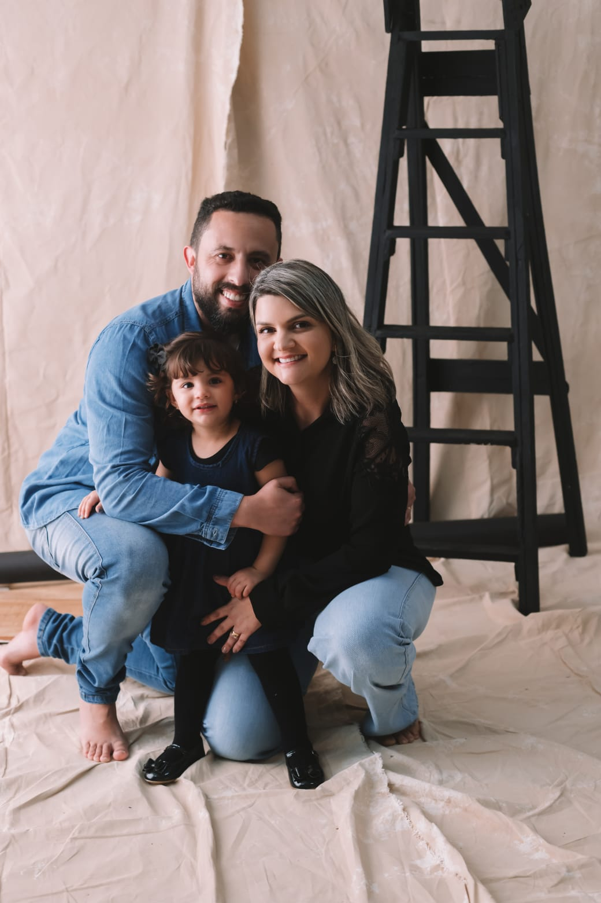

Albiezer Fascio da Silva
Desenvolvedor
contato
Linkedin
Experias
Thermo fisher S.A (Gigrup) - Analista de dados mestres Jr
São Paulo, São Paulo
11/2021 - 12/2023
Análise de dados cadastrados (clientes, fornecedores, produtos e funcionários);
Criação de Dashboards em Power BI para visualização de métricas;
Aprovação final de WorkFlows para manutenção de dados;
Cadastro dos produtos, clientes, funcionários e fornecedores no sistema Oracle JD Edwards;
Responsável pela manutenção dos dados apoiando as áreas de Supply Chain, Customer Service, Fiscal, Sales Strategy do México, Colômbia, Chile e Argentina;
Extração e limpeza de dados para gerar relatórios do sistema para auditorias e/ou melhorias;
Clariant S.A - Estagiário em Engenharia de Controle e Automação
Suzano, SP
01/2018 - 12/2019
Controle e automação de processos químicos
Configuração de PLC e Hardware
Participação de Follow-Up até o Start-Up de cada CAA/CAR
Família de PLC's S7-400 SIEMENS
Conhecimento em Supervisório
Alguns softwares como PCS7, Wincc, Pactware (Pepperl+Fuchs), AutoCAD, SolidWorks
Além de ter conhecimentos em linguagens de programação como LADDER, CFC e SFC
Conhecimento de redes PROFIBUS-DP/PA e PROFINET
Inversores de frequência, SoftStarters e Simocodes
Conhecimento em instrumentação industrial: Nível, Pressão, Temperatura e Vazão
Interpretação de diagramas de malhas e P&ID
Controle e planejamento de materiais de automação
Contato e agendamento de visitas com fornecedores